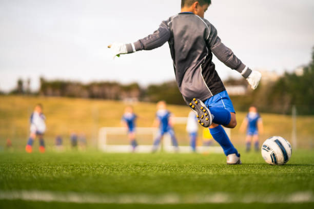
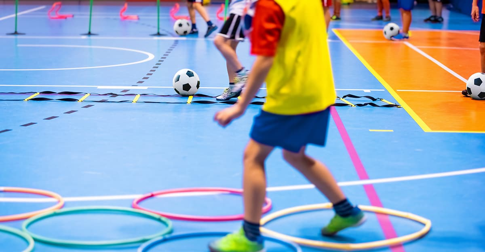

Soccer rules & skills
New to soccer? That’s fine. We’ll learn the basics together and build from there.

Basic PE soccer rules
- No hands: Field players use their feet, legs, chest, or head, not their hands or arms. The goalkeeper may use hands only in the goal area when we’re playing with one.
- Ball out on the side: The other team restarts with a throw-in. Keep both feet down and throw the ball over your head.
- Ball over the end line: The teacher will explain whether we use a corner kick or goal kick for that play.
- Play safely: No pushing, tripping, slide tackling, or kicking at someone. Give people room and watch where you’re going.
- Respect the call: Stop when the whistle or signal goes. Ask questions calmly if you’re confused.
PE games can use simplified rules. Mr. Higgins will explain any changes before we start.
Skills we’ll work on

Dribbling
Use small touches to keep the ball close while you move.
Passing
Use the inside of your foot to send a pass to a teammate.
Receiving
Get in line with the ball and soften your touch to keep control.
Shooting
Look up, aim, and use a controlled kick toward the goal.
Basic defending
Stay balanced, give space, and try to block passing lanes instead of charging in.
Beginner tips
- Practice with short touches before trying to run fast.
- Look up between touches so you can see your teammates.
- Pass to a teammate who has space. You don’t have to do everything yourself.
- Try a little bit often. Getting comfortable takes practice.
Common mistake: Kicking the ball as hard as you can. Control comes first. A softer touch is usually more useful than sending the ball across the whole gym.
Remember
No pushing or tripping, and stop when you hear the whistle. If you’re unsure about a call, ask Mr. Higgins after play stops.